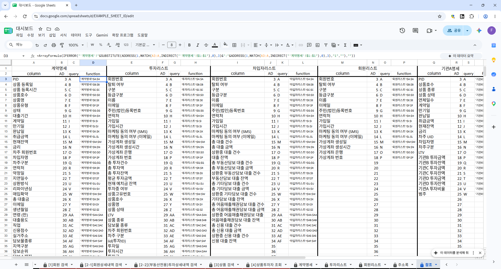
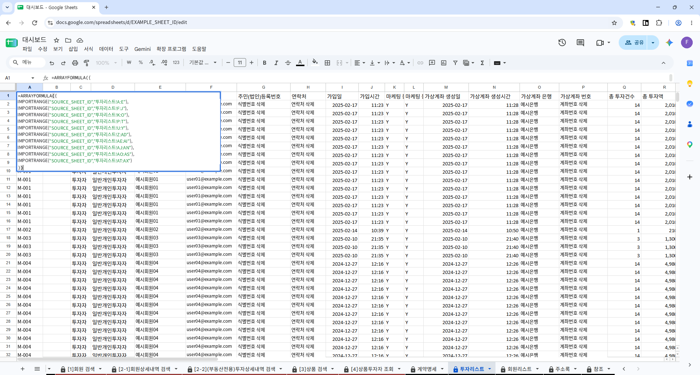

SPREADSHEET APPLICATION
회원·대출
관리 시트
여러 원장을 연결해 회원과 상품의 대출·투자 현황을 확인합니다.
열 이름으로 자료를 찾아, 파일의 열 순서가 바뀌어도 같은 화면에서 볼 수 있게 만들었습니다.
실무 적용 · 성과
업무에 쓰고, 전산 화면 설계에도 활용
회원·대출 현황을 확인하는 실무 도구로 사용했습니다. 퇴사 후에도 회사 전산시스템의 메뉴와 화면을 설계할 때 참고자료로 활용됐습니다.
전산에서 보기 어려웠던 현황을 한곳에 모았습니다.
일마감 자료로 만든 조회 화면
기존 전산시스템에서는 회원·상품별 잔액과 투자 현황, 연체율을 한눈에 확인하기 어려웠습니다. IT 부서와 협의해 일마감 후 DB 자료를 받아 회원·차입자·투자자·상품·채권 원장을 연결한 관리 시트를 만들었습니다.
일상적인 조회와 집계에 사용
회원별 대출 내역을 찾고, 상품별 취급액·잔액·평균금리·연체율과 기관별 투자액을 확인하는 데 사용했습니다. 원천 파일의 열 순서가 바뀌어도 계속 쓸 수 있도록 열 이름과 위치를 연결하는 참조표를 두고, 원장과 조회 화면을 분리했습니다.
아래는 Google Sheets에서 사용한 화면입니다. 개인·회사 식별정보와 문서 주소는 가리거나 예시로 바꿨습니다.
회원별 대출 현황
회원을 찾아 상품별 취급액과 잔액, 상환 상태를 확인합니다.

열 순서가 바뀌어도 이름으로 찾습니다.
필요한 항목과 원장의 열 이름을 참조표에 맞춰 둡니다. 실제 파일에서 그 이름의 열을 찾아 INDIRECT로 수식에 연결합니다.
열이 추가되거나 순서가 바뀌면 새 위치를 찾습니다. 양식마다 열 이름이 다른 경우에는 참조표에서 항목을 연결해 같은 화면에 불러옵니다.
원장의 열 이름을 필요한 항목과 맞추고, MATCH로 위치를 찾습니다.
ADDRESS와 SUBSTITUTE로 열 주소를 만들고 시트명을 붙여 참조표에 모읍니다.
찾은 열을 회원·상품 검색과 잔액·연체율 계산에 씁니다.

원장은 별도 문서에 둡니다.
원장과 대시보드를 나눠 두어, 자료를 갱신하는 일과 화면을 수정하는 일을 따로 관리합니다.
Google Sheets에서는 IMPORTRANGE로 다른 문서의 필요한 열을 가져와 배열식으로 한 표에 모읍니다. 이 표를 참조표와 화면의 수식에 연결합니다.

열을 찾고 자료를 불러오는 수식
- 제작·사용 환경
- Microsoft Excel · Google Sheets
- 열 위치 찾기
- MATCH로 열 위치를 찾고 ADDRESS·SUBSTITUTE로 만든 주소를 INDIRECT에 연결합니다.
- 다른 문서 연결
- Google Sheets의 IMPORTRANGE로 다른 문서의 필요한 열을 가져옵니다.
- 여러 행에 수식 적용
- Google Sheets의 ARRAYFORMULA로 참조 수식을 여러 행에 적용합니다. 가져온 열은 배열식으로 한 표에 모읍니다.
- 입력 자료
- 차입자·투자자·상품·채권 원장
- 확인하는 정보
- 회원과 상품을 검색하고 취급액·잔액·연체율, 기관별 투자액과 비율을 확인합니다.
상품별 잔액·연체율 집계
상품 유형별 취급액, 잔액, 평균금리와 연체율을 집계합니다.

부동산 담보대출 현황
월별 실적을 상환·매각·연체 상태로 나누어 확인합니다.

투자상품 목록
계약일과 만기일, 잔액, 기관별 투자액과 비율을 확인합니다.

상품 통합 검색
상품 조건과 상환 상태로 찾아 잔액·금리·기간을 확인합니다.

투자·대출 데이터 검증과 보고자료 작성
별도의 데이터 검증 업무에서는 약 3,000개 상품의 자료를 엑셀로 대조했습니다. 확인한 차이와 정리한 기준을 IT 부서에 전달하고, DB 수정 후 다시 검증하는 과정을 맡았습니다.